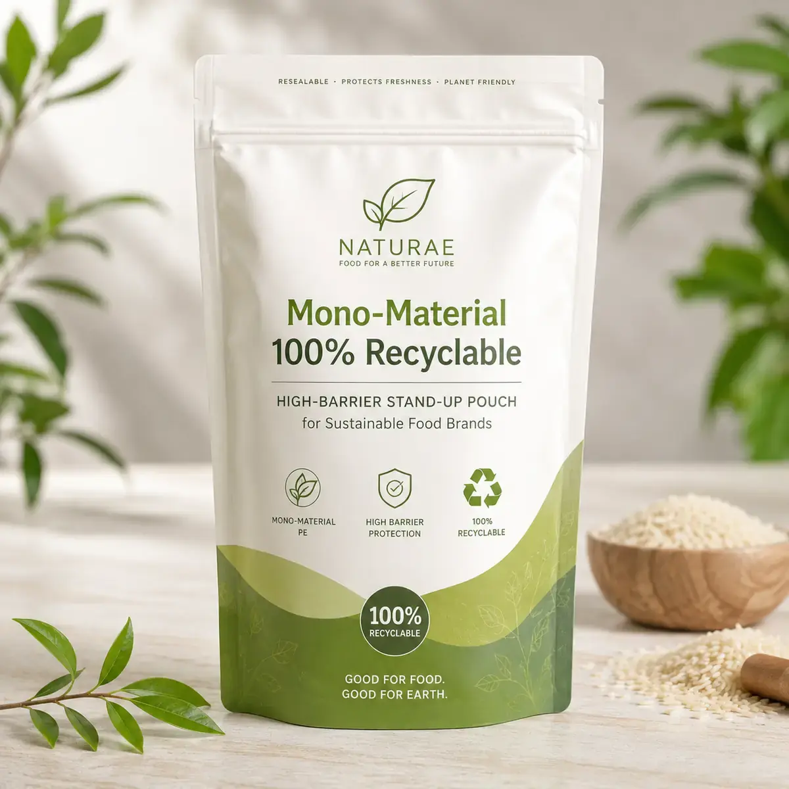

Mono-material recyclable stand-up pouch for sustainable food brands, designed with high-barrier PE/PE structure, resealable function and eco retail presentation.

Mono-material recyclable stand-up pouch for sustainable food brands, designed with high-barrier PE/PE structure, resealable function and eco retail presentation. We support custom size, material structure, rich logo printing, barrier performance, zipper/spout/valve options, barcode, QR code, batch panel and export-ready carton packing.
| MOQ | 500 PCS recyclable PE/PE stand-up pouches |
|---|---|
| Material | Mono-material PE/PE recyclable laminate |
| Barrier | Moisture and oxygen barrier options for dry food products |
| Features | Resealable zipper, bottom gusset, tear notch, recyclable claim area |
| Applications | Organic food, cereals, dry snacks, rice, granola, plant-based foods |
| Customization | Size, matte finish, window, zipper, QR code, recycling icons, export packing |
Send product size, quantity, material, artwork, target market and delivery country to Linda Wang.
WhatsApp Linda Email InquiryMono-Material 100% Recyclable High-Barrier Stand-Up Pouch for Sustainable Food Brands is a high-intent B2B custom packaging product page for brands comparing flexible packaging factories. Buyers should provide fill weight or volume, pouch dimensions, target shelf life, filling process, closure type, artwork file, order quantity and delivery country.
This page uses commercial long-tail search intent, specific material terms, application keywords, customization options and RFQ-ready specifications so Google and AI search systems can understand the product clearly.
PE/PE mono-material pouch structures are designed to support recyclable flexible packaging streams where local recycling infrastructure accepts them.
Yes. We can recommend mono-material high-barrier structures for many dry food and sustainable retail packaging needs.
MOQ 500 PCS · Fast Factory Quote
Click below to contact us quickly by WhatsApp or email. We can help with dieline, samples, printing, materials and worldwide shipping.
Chat on WhatsAppEmail Inquirylinda@colorprintingpackage.com